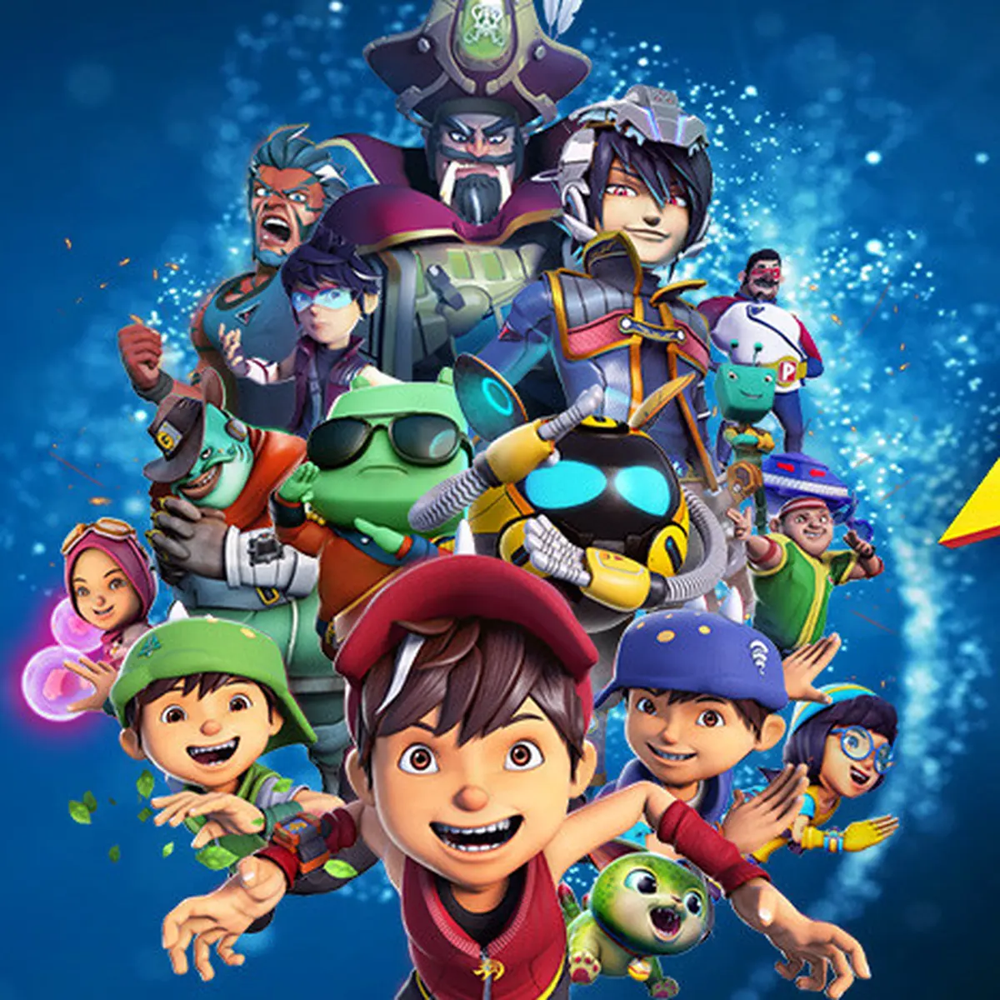

Never Gonna Give You Up ditulis oleh tim produksi besar Inggris yang terdiri dari Stock, Aitken, dan Waterman yang telah mencetak hits besar termasuk 'Respectable' oleh Mel & Kim dan 'I Should Be So Lucky' oleh Kylie Minogue . Lagu tersebut terinspirasi dari seorang wanita yang dipacari Pete Waterman selama tiga tahun, dengan Rick Astley yang mengaku "Kau tak akan pernah menyerahkannya" setelah tak sengaja mendengar percakapan tiga jam di antara mereka berdua melalui telepon. Aitken dan Waterman mengubah karakter dalam cerita untuk menjadikan narator, Astley, karakter yang rentan dan sebuah hit pun lahir. Dalam wawancara tahun 2018, Rick berbicara tentang bagaimana menurutnya lagu itu sepenuhnya miliknya meskipun dia tidak benar-benar menulisnya, dengan mengatakan: "Jika kamu tidak menulis lagu itu dan kamu belum memproduksinya, itu adalah lagumu. "Namun, butuh sedikit waktu untuk meresapinya dan membuatnya benar-benar menjadi lagu Anda. Bahkan beberapa penyanyi hebat, Whitney Houston , atau bahkan Frank Sinatra , tidak menulis dan memproduksi musik tersebut," tambahnya.
Audio Lagu
Video Klip
Ulasan Pribadi
Buat yang ngalamin era 80-an, lagunya nostalgia banget — bawa vibe ceria, optimis, dan easy listening. Beat-nya bikin goyang, dan liriknya romantis tanpa lebay. Vokal Rick juga bikin banyak orang kaget karena suaranya dalem, padahal mukanya baby face banget waktu itu. Nah, buat generasi internet, kesannya lebih ke fun dan lucu karena udah nempel sama budaya Rickroll. Bahkan kalau kena prank-nya, banyak yang nggak marah, malah senyum sendiri karena lagunya emang enak.
Rating
⭐⭐⭐⭐⭐
Spongebob Squarepants
Derek Drymon, Mark Harrison, Stephen Hillenburg, Blaise Smith
Cover Album
Deskripsi
Liriknya berfungsi sebagai pengantar ke dunia SpongeBob: memperkenalkan karakter utama dan lokasi cerita — bawah laut di Bikini Bottom. Dengan pengulangan nama "SpongeBob SquarePants" yang ikonik di akhir setiap bait, lagu ini cepat menempel di kepala dan jadi bagian tak terpisahkan dari masa kecil jutaan penonton. Stephen Hillenburg, sang kreator SpongeBob, yang juga mantan ahli biologi laut dan animator, ingin lagu ini terasa seperti panggilan bajak laut untuk petualangan — sesuatu yang menggugah imajinasi anak-anak. Maka muncullah karakter bajak laut fiksi Painty the Pirate (di suara oleh Patrick Pinney), yang membuka setiap episode dengan pertanyaan: “Are ya ready kids?!
Audio Lagu
Video Klip
Ulasan Pribadi
Lagu pembuka SpongeBob tuh bener-bener anthem masa kecil, bro. Dari nada pertama sampe teriakan "Aye Aye, Captain!", langsung bawa memori balik ke hari Minggu pagi nonton kartun sambil sarapan. Vibenya riang, lucu, dan gak ngebosenin — bahkan setelah didengerin berkali-kali. Meskipun pendek, lagu ini kuat banget secara identitas. Setiap anak (dan bahkan banyak orang dewasa) pasti langsung kenal dari satu baris awal doang. Ini bukan cuma lagu pembuka, tapi bagian dari budaya pop. Dan jujur, tiap denger lagu ini, rasanya kayak diajak main-main ke dunia SpongeBob yang absurd tapi seru banget.
Rating
⭐⭐⭐⭐⭐
Boboiboy Galaxy
Bunkface
Cover Album

Deskripsi
“Dunia Baru” ditulis oleh Sam Bunkface (vokalis utama) dan diproduseri oleh tim Animonsta Studios bekerja sama dengan band tersebut. Nuansa lagunya lebih modern dan edgy dibanding lagu pembuka BoBoiBoy sebelumnya, mencerminkan perkembangan karakter dan cerita yang lebih matang, penuh aksi luar angkasa, dan eksplorasi galaksi. Lirik lagunya membahas tentang petualangan, keberanian, dan semangat menghadapi dunia baru — sejalan dengan konsep cerita BoBoiBoy Galaxy yang lebih luas dan penuh tantangan interplanet. Penggunaan musik rock dengan sentuhan elektronik dan chorus yang powerful menjadikan lagu ini mudah diingat dan menaikkan semangat penonton sebelum menyaksikan aksi BoBoiBoy dan kawan-kawan. Lagu ini juga jadi bagian dari strategi branding Monsta untuk membawa BoBoiBoy ke level global, memperkuat identitas musikal yang khas dan catchy.
Audio Lagu
Video Klip
Ulasan Pribadi
Sound-nya powerful, cocok banget sama tema petualangan antargalaksi. Pas intro-nya mulai, langsung bikin semangat dan terkesan kalau “Oke, ini bakal jadi aksi yang seru.” Vokal khas Sam Bunkface juga ngasih energi anak muda yang pas banget buat nuansa petualangan dan persahabatan. Lagu ini juga punya efek nostalgia sekaligus fresh — nostalgia karena karakter BoBoiBoy udah dikenal sejak kecil, tapi juga fresh karena musiknya lebih dewasa dan berani. Intinya, “Dunia Baru” bukan cuma lagu pembuka kartun, tapi bisa dinikmati kayak lagu rock beneran.